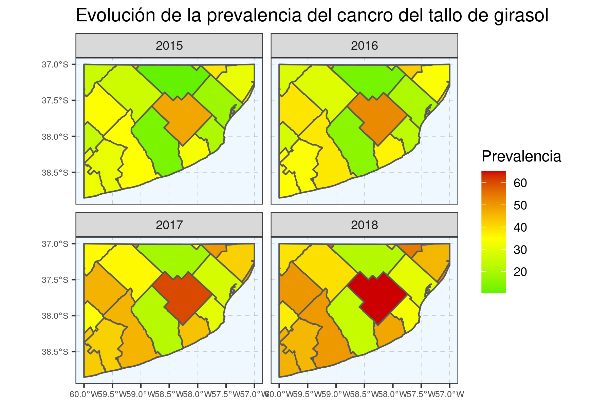

1 Métricas báscias
- Cargamos datos y paquetes
library(tidyverse)
load("data/data.RData")Olivo/bacteriosis —
olivo %>% viewdataset formato “wide” (planilla de campo) con 30 columnas de sev por arbol individual [datos simulados]
- Re-estructuracion —
Pasamos de formato wide a long para hacer operaciones por grupos. Ojo: No siempre debe hacerse este paso aunque nos habilita a group_by()+ summarise() # le pedimos que apile las columnas conteniendo a las plantas 1 a 30 # el nombre de las columnas las apile en una columna llamada “tree” # la observaciones de severidad las apile en una columna llamada sev # el producto de este re-arreglo se llamará “oli_long”
olivo %>%
pivot_longer(cols = `1`:`30`,
names_to = "tree",
values_to = "sev") -> oli_long Chequeamos cuántos árboles fueron evaluados en cada año/región/lote:
oli_longChequeamos cuantos arboles se evaluaron por campo
oli_long %>%
group_by(year, loc, farm) %>%
summarise(n= sum(!is.na(sev))) %>%
pivot_wider(names_from=year,
values_from = n)Imprimimos los 30 árboles de un mismo lote
oli_long %>%
arrange(loc, year) %>%
print(n=30)1.1 Incidencia
(nivel lote - evolución interanual)
Probamos el artilugio matemático que nos permitirá calcular la proporción de árboles enfermos
muestra1 <- c(0,1)
mean(muestra1)muestra2 <- c(0,0,0,0,1)
mean(muestra2)muestra3 <- c(1,1,1,1,1,1,1,1,0,0)
mean(muestra3)Ahora si, aplicaremos el artilugio a nuestros datos.
Tip: pueden ir seleccionando por lineas para ir probando el codigo antes de ejecutarlo por completo (seleccionar hasta antes de cada pipe, sino quedará abierta la sentencia)
oli_long %>%
mutate(diseased = sev>0) %>%
group_by(year, loc, farm) %>%
summarise(inc = mean(diseased, na.rm=TRUE)*100) %>%
ungroup %>%
arrange(loc, year) -> oli_inc Damos print a “oli_inc”
oli_incGraficamos oli_inc (una de las posibilidades)
oli_inc %>%
ggplot()+
# aes(x=factor(year), y=inc) +
aes(x=factor(year), y=inc, color=factor(farm)) +
geom_point() +
# geom_line() +
geom_line(aes(group=farm)) +
facet_grid(. ~ loc)1.2 Prevalencia
Nivel región - evolución interanual
oli_inc %>%
mutate(diseased_farm = inc>0) %>%
group_by(year, loc) %>%
summarise(prev = mean(diseased_farm, na.rm=TRUE)*100) %>%
ungroup %>%
arrange(loc,year) -> oli_prevoli_prevPlot de oli_prev
oli_prev %>%
ggplot()+
aes(x=factor(year), y=prev, color=factor(loc)) +
geom_point() +
geom_line(aes(group=loc))1.3 Severidad
Calculamos ambas severidades vistas en la introducción teórica
NOTA: en el teórico la sev_cond daba “NaN” en aquellos casos en que todos los arboles tenian sev=0, y en el filtrado sev[which(sev > 0)]
el vector quedaba vacío.
oli_long %>%
group_by(year, loc, farm) %>%
summarise(
sev_media = mean(sev, na.rm=TRUE),
sev_cond =mean(sev[which(sev > 0)])) %>%
ungroup %>%
mutate_all(~replace(., is.nan(.), 0)) %>%
arrange(loc, year) -> oli_sev
oli_sevPrint oli_sev
oli_sevPlot oli_sev
- Aprovechamos a usar una función muy eficiente que puede resultar una gran aliada en nuestro trabajo cotidiano:
stat_summary()
oli_sev %>%
ggplot()+
aes(x=loc, y =sev_media)+
geom_point(alpha=.3)+
facet_wrap("year")+
stat_summary(fun = mean, geom = "crossbar", col="blue")+
stat_summary(aes(label=..y.. %>% round(1)),
fun=mean,
geom="text", size=4, vjust = -0.5) +
scale_x_discrete(guide = guide_axis(n.dodge = 2)) - Bonus 1
Wide (sev y yield) a long
Soja es el típico dataset de un experimento de campo donde evaluamos severidad y rendimiento de las parcelas
soja %>% viewVemos que tiene el formato de planilla de campo (wide), en donde no repetimos el nombre de trat, sino que ubicamos los datos de cada rep en la misma linea
soja %>%
pivot_longer(
cols = matches("_"),
names_to = c(".value", "bk"),
names_sep = "_") -> soja_longprint soja_long
soja_longGráfico exploratorio de sev
soja_long %>%
ggplot()+
aes(x=factor(fungic), y=sev)+
geom_boxplot(width=.2) +
geom_point(aes(col=factor(bk)))Gráfico exploratorio de yield
soja_long %>%
ggplot()+
aes(x=fungic, y=yield)+
geom_boxplot(width=.2) +
geom_point(aes(col=factor(bk)))Ahora este dataset nos permitirá entrar al modelado unviaridado de severidad o rendimiento, o bien establecer relaciones entre ambas variables (correlación o regresión).
- Bonus 2
Mapa de prevalencia
library(tidyverse)
library(sf)
theme_set(theme_bw()+
theme(
panel.grid.major = element_line(color = gray(0.5),
linetype = "dashed",
size = 0.05),
panel.background = element_rect(fill = "aliceblue"),
axis.text.x = element_text(size = 6),
axis.text.y = element_text(size = 6),
))ARG2 <- raster::getData(name = "GADM", country = "ARG", level = 2) %>% st_as_sf()
# https://datascience.blog.wzb.eu/2019/04/30/zooming-in-on-maps-with-sf-and-ggplot2/
BSAS <- ARG2 %>% filter(NAME_1 == "Buenos Aires")Cortamos la region de nuestro interes
SEBA <- st_crop(BSAS,
xmin = -60, xmax = -57,
ymin = -39, ymax = -37)Cuantos partidos quedaron incluidos?
SEBA %>% as_tibble %>% count(NAME_2)Quedaron incluidos 18 partidos: Simulamos un dataset de prevalencia para 4 años
cancro <- SEBA %>%
as_tibble %>%
mutate(preval_2015 = rnorm(n=18, mean=30, sd=10),
preval_2016 = preval_2015*1.05 + rnorm(1, 3, 2) ,
preval_2017 = preval_2016*1.05 + rnorm(1, 3, 2),
preval_2018 = preval_2017*1.05 + rnorm(1, 3, 2)) %>%
pivot_longer(preval_2015:preval_2018,
names_to = "anio", values_to = "prevalencia",
names_prefix = "preval_")
cancro
SEBA_cancro <- SEBA %>%
left_join(cancro, by= "NAME_2") #%>%SEBA_cancro %>%
ggplot() +
geom_sf(data=SEBA)+
geom_sf(aes(fill=prevalencia))+
scale_fill_gradient2(midpoint = 35,
low = 'green2',
mid = 'yellow',
high = 'red3',
na.value = 'gray95')+
facet_wrap("anio")+
labs(title = "Evolución de la prevalencia del cancro del tallo de girasol",
x = NULL, y = NULL, fill = "Prevalencia")ggsave(last_plot(), file = "fig/prevalencia_cancro.png", w=6, h=4)